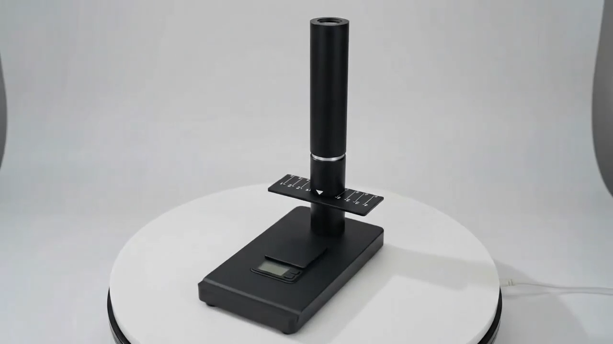

CheckCells / Seaman PRO — AI-Powered Laboratory Analysis & Hardware Ecosystem
Contributing to the evolution of an optical imaging device, computer vision validation, and laboratory software within a broader ecosystem that also includes a patient-facing AI companion.

End-to-End Product System
Semen analysis traditionally required tedious, error-prone manual microscopic counting. CheckCells built Seaman PRO to automate quantitative parameter detection (Concentration, Motility, Morphology, Vitality, pH) referenced against WHO 6th ed. standards.
Key Hardware & Interaction Iterations
- Manual Focus Calibration: Replaced static focal distances with a rotatable threaded upper cylinder, guided by live-feed software instructions.
- Spatial Wayfinding: Redesigned slide rails with precision alignment and etched chamber numbering (1–4) directly onto the hardware.
- Structural Stability: Shifted from lightweight circular bases to a solid rectangular base to improve stability and reduce unwanted optical shift during sample handling.
- Human-in-the-Loop AI: Compared model detections against manual reference counts; labeled ~500 images and video frames in Label Studio to support model improvement.
- Documentation: Co-authored Seaman PRO Instructions for Use (IFU) documentation and lab operator guidance.
Hardware Evolution (Portfolio Demo)
Jan 2026 – Jun 2026
V1: Laboratory Stand Prototype
Initial benchtop prototype testing focal length and magnification geometry using an adjustable laboratory clamp stand.
Finding: Unstable focal plane; demonstrated need for rigid dedicated housing.
Focus & Quality Gate Simulator (Portfolio Demo)